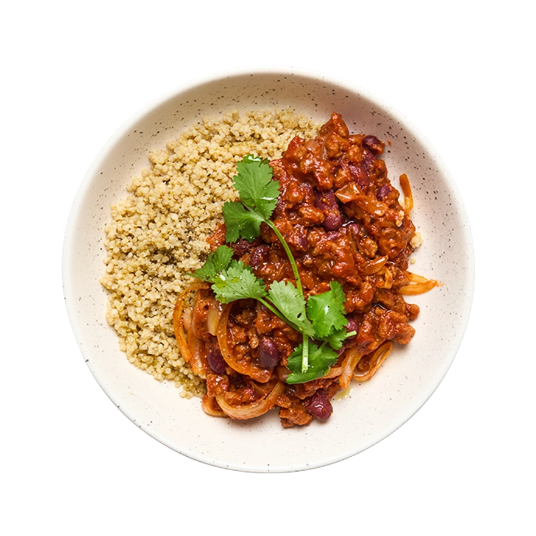

Chili San Carne
30min - 350 kcal/per person
- 00g Beans
- 00g Diced tomatoes
- Onion
- Garlic cloves
- Red bell pepper
- tsp chili powder
- tsp cumin
- 00 ml Vegetable Mix
- Salt
- Heat 1 tablespoon of oil in a large pot over medium heat. Add the finely chopped onion and minced garlic, let is cook for for 3-4 minutes until translucent.
- Add the diced red bell pepper to the pot and cook for 2-3 minutes, stirring occasionally.
- Stir in the chili powder and ground cumin, cooking for 1 minute to release the aromas of the spices.
- Add the diced tomatoes and vegetable stock to the pot. Bring the mixture to a gentle simmer.
- Rinse and drain the kidney beans, then add them to the pot. Stir to combine all ingredients evenly.
- Simmer the chili uncovered for 20 minutes, stirring occasionally to prevent sticking. Adjust the seasoning with salt to taste.
- Once the chili has thickened and the flavors have melded together, remove it from the heat.
- Serve the Chili San Carne hot, garnished with fresh cilantro if desired. Enjoy your hearty and delicious meal!